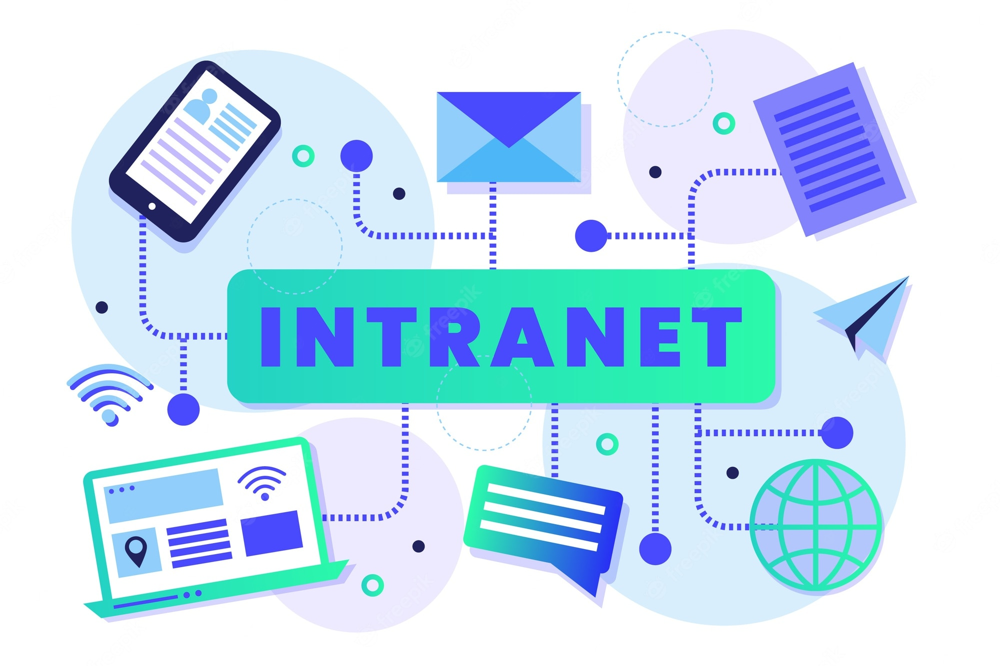

Intranet y ExtranetExtranet
La extranet es una plataforma virtual que conecta a una organización o empresa con miembros externos, principalmente, proveedores y clientes. Es decir, la extranet permite a una entidad tener una vía de comunicación, particularmente, con el público que adquiere sus productos o servicios, al igual que con quienes les proveen de insumos o materias primas. La extranet se caracteriza por ser entonces una red informática mediante la cual una institución comparte información con usuarios externos. Esto, a diferencia de la intranet que usan solo los empleados que sí forman parte de la organización. La extranet se vale del Internet, brindando acceso a través de un protocolo que normalmente requiere de un nombre de usuario y una contraseña. Así, una vez ingresado al sistema, el cibernauta podrá disponer de una variedad de datos en línea para descargar, y otros que puede solicitar. En ese sentido, es importante advertir que la empresa debe tener cuidado con los datos que comparte a través de su extranet. Esto, porque información confidencial podría filtrarse al público general. Funciones de la Extranet
Envío de información de las actividades periódicas de la empresa a los grupos de interés, como socios o clientes. Descarga de información o documentos relacionados a los bienes o servicios que ofrece la compañía. Permite hacer el seguimiento en tiempo real sobre un proceso. Por ejemplo, el estado del envío de una mercancía. Es decir, si aún está en almacén o en qué parte del camino se encuentra. Esto puede ser muy útil en el comercio electrónico, sobre todo, cuando el producto se traslada de un país a otro. La empresa también recibe información mediante la extranet. Así, puede realizar encuestas, por ejemplo, a sus clientes, o pedir sugerencias para mejorar sus servicios. Intranet La intranet es la plataforma virtual que una empresa o entidad pone a disposición de quienes pertenecen a ella, particularmente, sus empleados. Es decir, la intranet es una red interna que permite que los trabajadores de una compañía puedan estar en contacto entre ellos, y con la gerencia de la organización. El objetivo de una intranet es que la empresa pueda facilitar ciertos procesos internos, habilitándolos de forma digital, valiéndose de Internet. Los empleados de una empresa podrían utilizar la intranet, por ejemplo, para marcar su hora de entrada y de salida del lugar de trabajo. A diferencia de la extranet, la intranet es una red de carácter privado que no puede ser usada por personas que no pertenecen a la organización. Es decir, los usuarios deben poseer, por ejemplo, un vínculo laboral con la entidad. Así, una vez que culmina dicha relación, también se elimina el acceso al ex trabajador. Los empleados de una organización tendrán acceso a la intranet con un usuario y contraseña, habilitándose un perfil de acuerdo a su puesto laboral. Esto, debido a que los gerentes, por ejemplo, podrán tener acceso a cierta información que es restringida para los demás empleados. En ese sentido, es importante que se implementen los sistemas de seguridad necesarios para que personas externas no puedan acceder a información privada de la empresa. Igualmente, se debe tener cuidado con los datos que se comparten con los empleados, porque estos podrían filtrarlos al público general. Funciones de la IntranetPermitir el intercambio de información entre los diferentes departamentos de la empresa. Poner a disposición de los empleados los recursos que necesitan para realizar las tareas encargadas. Trabajar con un sistema de información centralizada que permite a la empresa monitorear todos sus procesos. Facilitar a los empleados la realización de distintos trámites, como el registro de vacaciones o la solicitud de algún documento corporativo. Permite interactuar a dos empleados que están involucrados en el mismo proyecto o tarea, aunque se encuentren físicamente distanciados. Por ejemplo, puede ser que cada uno trabaje en una ciudad diferente. |